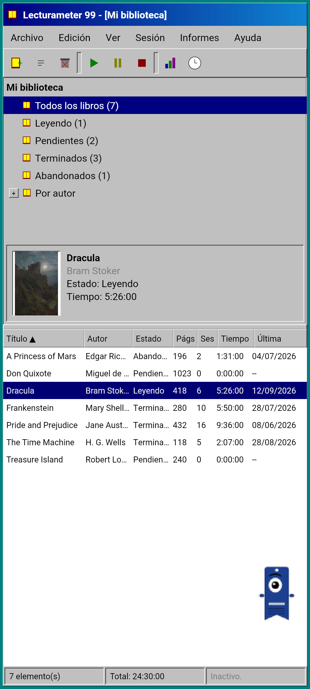
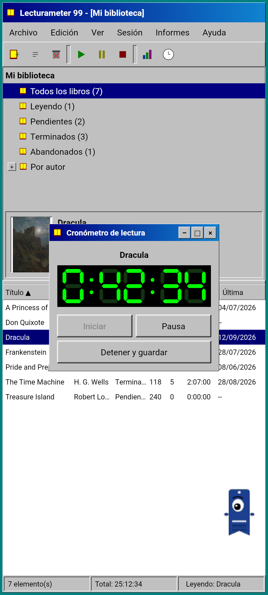
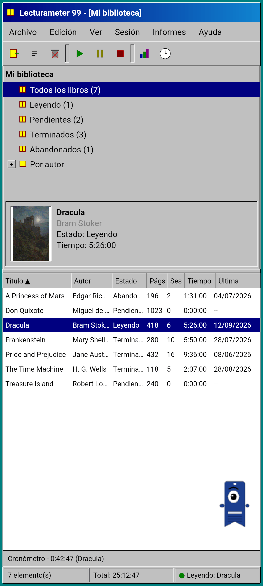
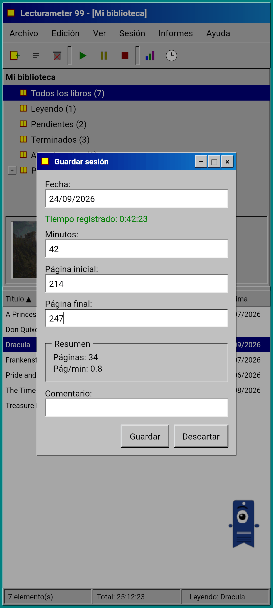
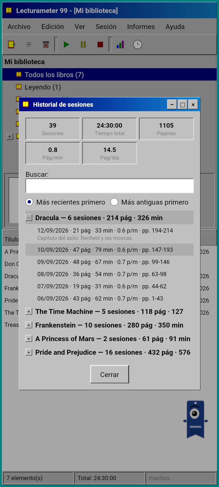
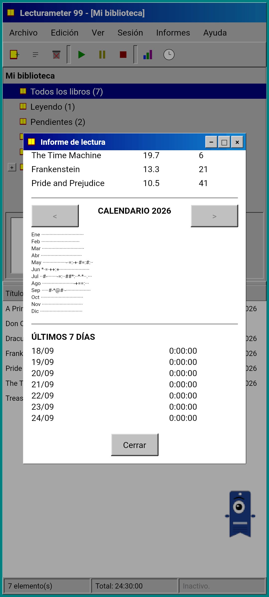
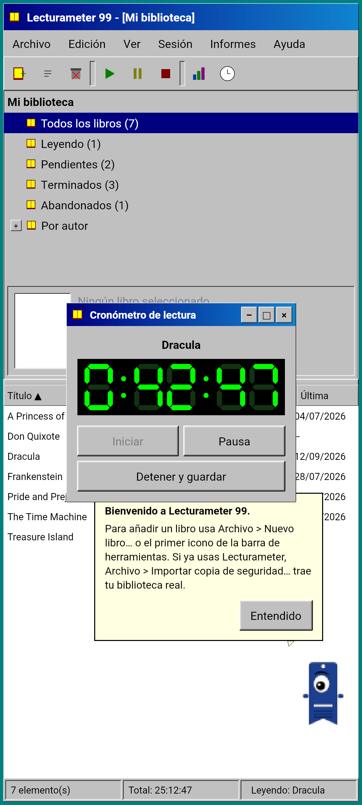
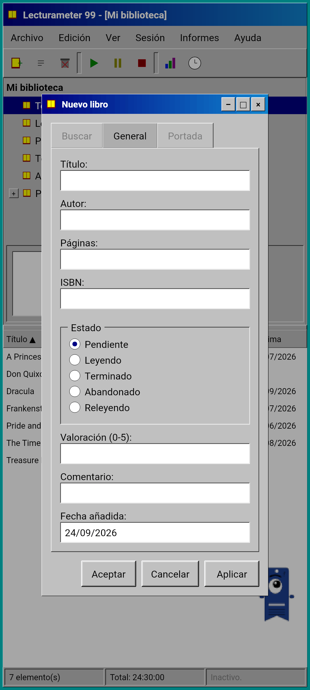
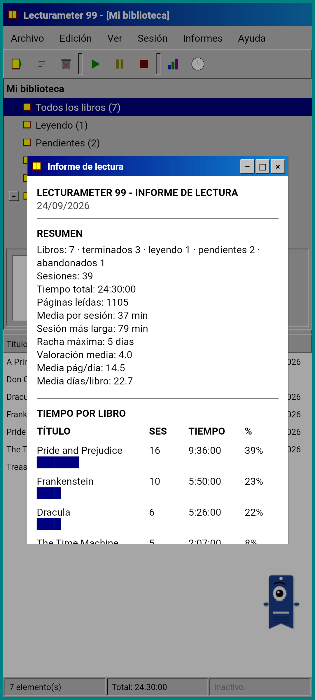

Blog · 2026-09-24
Lecturameter 1999: ¿cómo sería Lecturameter si fuese un programa de PC antiguo?
Un cliente alternativo de Lecturameter con ventanas, menús, tablas y un cronómetro LCD, que abre tus copias de seguridad reales. Cómo nació, qué tiene y qué deja fuera a propósito. Llegará gratis a Play Store y App Store.
Lecturameter 1999 lleva unos meses cocinándose. La he ido haciendo a trozos, de cuando en cuando, sin prisa y sin plan. No me puse con ella en serio hasta que vi que la versión de iOS era más sencilla de lo que creía y me dejaba margen para terminarla.
No es el único experimento. Hay otros proyectos del universo Lecturameter pensados, algunos bastante avanzados y otros apenas empezados. Lo más probable es que nunca vean la luz.
¿De dónde sale?
Todo empezó con un experimento que llevaba tiempo rondándome.
La idea era reconstruir Lecturameter desde cero, varias veces, bajo premisas de diseño radicalmente distintas. Sin tocar la app real y sin intención de sustituirla. Salieron siete versiones. Una imitaba una app de Android de 2016, otra imaginaba cómo sería en 2036, otra convertía la biblioteca en una estantería con lomos que engordan según lees, otra estaba diseñada para una consola portátil con dos pantallas.
La que más me gustó fue la de 1999. Un programa de escritorio de finales de los noventa: denso, utilitario, todo en ventanas, menús y tablas. Decidí terminarla, poco a poco, como ejercicio divertido y convertirla en un cliente completo, con los datos de verdad de Lecturameter debajo.
¿Qué es?
Lecturameter 1999 es una app independiente, separada de Lecturameter. Al abrirla ves una sola ventana maximizada sobre un escritorio verde azulado. Arriba, la barra de título y los menús: Archivo, Edición, Ver, Sesión, Informes y Ayuda. Debajo, una barra de herramientas con iconos pixelados. El área central se divide en dos: un árbol con la biblioteca y un panel de vista previa con la portada, y una tabla con una fila por libro. Abajo, la barra de estado con el número de elementos, el tiempo total y el libro que estás leyendo.



Los mismos datos que Lecturameter
Esta es la parte que convierte el experimento en algo usable. Por debajo de la carcasa de 1999 está el modelo de datos real de Lecturameter, copiado tal cual: los mismos libros, las mismas sesiones, los mismos estados, valoraciones y notas. La copia de seguridad que exporta es el mismo archivo que exporta Lecturameter, y la que importa también.
En la práctica significa que puedes ir a Archivo, importar tu copia de seguridad y ver toda tu biblioteca en una tabla de 1999. Leer una semana con el cronómetro LCD. Exportar. Volver a la app moderna con las sesiones nuevas y sin haber perdido ningún campo por el camino. También entra y sale el CSV de Goodreads.
La búsqueda de libros es la misma que en Lecturameter: consulta el catálogo propio y Google Books, y rellena título, autor, páginas, ISBN y portada. La portada se posteriza y se pinta sin suavizado para que parezca un GIF de la época.
Sesiones, historial e informe
El flujo de lectura es el de Lecturameter, traducido a ventanas. Seleccionas un libro en la tabla y pulsas el botón de reproducir. Se abre la ventana del cronómetro, con un display de siete segmentos en verde sobre negro. Puedes moverla, minimizarla a una barra de tareas o cerrarla: el tiempo sigue contando en la barra de estado.
Al pulsar detener se abre el diálogo de guardar sesión: fecha, minutos, página inicial y final, comentario. El resumen calcula las páginas y el ritmo mientras escribes. Si llegas a la última página del libro, te pregunta si lo has terminado. Las sesiones manuales se añaden desde el menú Sesión.
El historial agrupa las sesiones por libro en un árbol con más y menos, con cinco cifras arriba: sesiones, tiempo total, páginas, páginas por minuto y páginas por día. Doble toque en una sesión para editarla, mantener pulsado para eliminarla.
Las estadísticas son un informe de lectura en texto monoespaciado, como si saliera de una impresora: resumen con racha máxima y valoración media, tiempo por libro con barras de bloques, velocidad en páginas por día, un calendario del año dibujado con caracteres según las páginas leídas cada día y los últimos siete días.



Pagi 99
Pagi también viaja a 1999. Es la misma silueta de marcapáginas con un ojo, pero pixelada, y va suelto por la pantalla como los asistentes de oficina de aquella época. Se arrastra con el dedo, dice una frase corta cuando lo tocas y cambia de expresión según lo que estés haciendo: piensa mientras buscas un libro, lee mientras corre el cronómetro y celebra cuando guardas una sesión o terminas un libro.
Los consejos de la app aparecen en globos amarillos anclados a Pagi, una sola vez cada uno. Si quieres repasarlos, están en Ayuda, en Consejo del día.



Lo que se queda fuera
Lecturameter 1999 es más simple a propósito. Es un experimento y, en principio, no va a tener más desarrollo después de publicarlo. Las novedades seguirán llegando a Lecturameter.
Al construirlo decidí que todo lo que no afectase al flujo de lectura no entraba. Por ello, Lecturameter 1999 no tiene Pro. Lo que veis es lo que hay.
Lecturameter 1999 saldrá en todos los idiomas que Lecturameter normal.
¿Cuándo?
Llegará a Play Store y App Store, gratis, después de que salgan Lecturameter para iOS y la versión 3.7. Está terminado y funcionando en mi móvil. Quedan las pruebas con mi biblioteca real y los últimos detalles antes de publicarlo. Cuando esté disponible lo anunciaré aquí, en X y en Reddit.
Mientras tanto, Lecturameter sigue siendo Lecturameter, con sus temas, sus retos y sus bingos. El 1999 es otra forma de mirar los mismos datos.
Mientras llega, Lecturameter en Android
Sigue leyendo: Lecturameter 1999 · ¿Tiempo de lectura o páginas? · Cronómetro de lectura